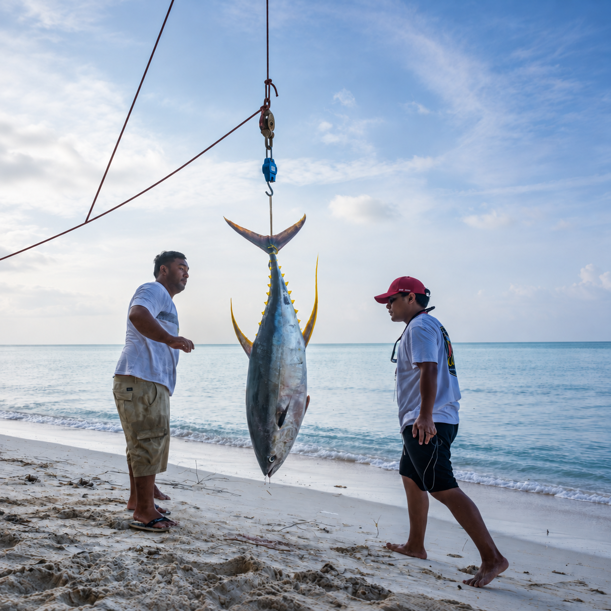

Nowcasting Fishing License Revenues in Kiribati
From vessel activity at sea to a clearer view of fishing revenues.
Global Fishing Watch uses machine learning to identify likely fishing activity from vessel-tracking data. We combine these observations with a transparent economic model to estimate changes in Kiribati’s fishing license revenues.

The latest view
Each measure has its own observation period.
An activity-based research tool for following revenue trends, exploring the fishing fleet and understanding the assumptions behind the estimates.
Explore the dataNowcasting Fishing Revenues
An activity-based estimate of how Kiribati’s fishing license revenue is changing.
The model translates comparable vessel activity into a revenue indicator, using explicit assumptions about fishing methods, fees and exchange rates.
Follow the methodRevenue indicator and recorded receipts
Model assumptions and interpretation
Why is the preferred estimate near the top of the range?
The shading is a model sensitivity range, not a 90% or 95% confidence interval. It spans the unadjusted weighted-day proxy and matched models with minimum daily tracking coverage from 1 to 18 hours. Each complete path is calculated first; the chart then takes the lowest and highest level in each year.
The preferred 18-hour model requires the same vessel and calendar date to have at least 18 hours of worldwide tracking in both comparison years. This is tracking time, not fishing time. More complete tracking can reduce the risk of mistaking missing observations for a decline in fishing. In this dataset, the stricter model produces a smaller cumulative decline and forms the upper edge of the historical range.
Stricter matching also changes the sample, and chaining links growth rates from different year-pair samples. A closer historical fit therefore does not prove that the upper path is unbiased or best for future observations. The preferred estimate is above recorded receipts in 2020–2022 and below them in 2023–2024. All paths share the imposed 2019 anchor. Missing vessels, contract prices and payment timing can put receipts outside the range.
Recorded annual receipts
Historical collections provide a separate reference for the model.
Annual fishing revenue
View the underlying annual records
| Year | Revenue | Record |
|---|
From estimates to collections
The model tracks an activity-based revenue signal. Monthly expected fees, invoices and cash collections require separate agreement and finance records.
Nowcasting Fishing Revenues in Tuvalu
The Kiribati approach adapted to Tuvalu’s observed purse-seine activity and revenue sources.
2019 anchor: A$38.1 million
The model follows purse-seine activity. The fiscal reference covers broader fishing licence receipts. Differences in scope, sample and collection timing matter for the comparison.
The shared methodologyRevenue estimate and reported receipts
Full-year model history through 2024 · January–August extensions for 2025–2026
Tuvalu model assumptions and sensitivity range
The model uses a screened population of 167 purse-seine vessels, matching the same vessel and calendar date across years with at least 18 hours of worldwide tracking in both years. The 18 hours refer to tracking coverage, not time spent fishing. Apparent fishing days are allocated using observed time inside Tuvalu’s waters, then valued using a fixed relative USD unit assumption and observed AUD/USD exchange rates.
The level is anchored once to the 2019 broad fiscal reference of A$38.1 million. It is not built from a complete ledger of Tuvalu’s licence contracts or actual fee prices. The match in 2019 is imposed by this anchor, not independent validation.
The shaded range is the minimum and maximum across the 1–18-hour tracking-threshold models, after each path is chained through time. Unlike Kiribati’s displayed range, it does not add an unadjusted weighted-day proxy. Neither range is a statistical confidence interval or a complete measure of uncertainty.
The dashed 2025–2026 values extend the annual 2024 model level using January–August growth ratios. These are conditional monetary equivalents, neither January–August collections nor full-year cash forecasts.
Changes in the revenue indicator
Year-on-year model changes · 2025–2026 compare January–August only
Reported revenues and their coverage
Only comparable, source-checked calendar-year observations appear on the main chart.
This fiscal-year amount is kept separate from the calendar-year chart. It cannot be assigned to either 2024 or 2025 as a calendar-year observation.
National Budget 2026–2027, p. 33 ↗| Year | Reported | Source and interpretation |
|---|
Why are later calendar-year revenues not plotted?
The reviewed 2023 sources contain unresolved conflicting amounts. The 2024 departmental outturn is internally inconsistent, while the IMF 2024 figure is an estimate. No reliable, comparable calendar-year actual was established for 2025–2026 in the reviewed snapshot. These gaps remain blank and do not remove or alter the model estimates.
Download the source exclusions and reasons · Download the accepted fiscal observations
Sources, definitions and reuse
Activity inputs: Global Fishing Watch, with physical-vessel reconciliation, sample screening and Tuvalu-specific geographic allocation. Fiscal inputs: IMF historical reporting, Tuvalu government financial statements and the national budget, linked in the table above. RBA exchange-rate inputs retain their source-specific terms.
2020 collections included arrears, which limits comparison with same-year fishing. The 2021–2022 financial statements carry an overall qualified audit opinion on other matters; the displayed fisheries line is not labelled an unqualified audit certification. The FY2024/25 figure is a Finance-reported actual, without a claim of audit certification.
Public downloads contain analytical aggregates and fiscal source references. The dashboard’s source and reuse conditions apply.
Fishing activity & fleet
Explore fishing effort, active vessels and regional patterns over time.
Fishing effort
Fishing hours measure classified activity. They are not directly comparable measures of catch or fishing intensity across longline and purse-seine vessels.
Observed fleet
Vessel movements need a different record.
Entry and exit events require verified crossings or complete tracks. The available monthly observations are not a crossing ledger.
03 / How it works
From vessel signals
to a revenue estimate.
The model connects observed fishing activity with economic assumptions. Each step answers a different question; together, they form an indicator of revenue change.
How the estimate is built
Five connected steps-
Step 01
Global Fishing Watch
Vessel tracking
& machine learningVessel positions and GFW’s machine-learning models identify patterns consistent with fishing.
-
Step 02
Observed activity
Apparent fishing,
measured over timeSummarise fishing activity and tracking coverage by vessel and day, keeping the two measures distinct.
-
Step 03
Comparable observations
The same vessels.
Comparable dates.Match the same physical vessels and calendar dates across years, keeping observations with sufficient tracking coverage.
-
Step 04
Economic assumptions
Activity translated
into revenue changeApply assumed fees, partial fishing-day adjustments and exchange rates, with separate treatment of fishing methods.
-
Step 05
Model output
A revenue estimate,
with sensitivityShow the preferred path alongside alternative assumptions, and compare historical estimates with recorded receipts.
Reference scale2019 = 100
Reading the result
An indicator,
with a clear frame.
- Observation window
- The latest revenue-model extension uses January–August 2026. The fishing-activity dashboard has its own, later cutoff.
- Range of assumptions
- The shaded range shows how model choices change the estimate. It is a sensitivity range, not a statistical confidence interval.
- Model and receipts
- The AUD scale expresses a model-equivalent value. Seasonal extensions are not full-year cash forecasts, invoices or recorded collections.
A closer look
Which observations enter the revenue model?
The revenue analysis starts from a fixed reference population of 648 vessels. The preferred specification compares the same physical vessel and calendar date across years, requiring at least 18 represented tracking hours on the compared dates. Actual inclusion depends on the observations available for each comparison.
This selected sample differs from the 402-group screened population used for the broad fishing-activity charts. Neither population is a census of every vessel fishing in Kiribati. Missing tracking is unknown, not proof of inactivity or departure.
How are activity and economic assumptions combined?
The saved model applies fixed method coefficients and partial purse-seine day allocation. Assumed purse-seine unit fees are denominated in USD and converted to AUD using period-specific exchange rates; assumed longline unit values are fixed in AUD. The currency split is a model assumption, not verified contract coverage.
GFW fishing hours, observed active vessel-days, chargeable licence days and cash receipts measure different things. Fishing-related hours are also not equivalent units of fishing power across gears.
Why use 2019 as the reference?
The path is anchored once to recorded 2019 fishing-licence receipts of A$210.64196068 million, shown as an index of 100. Later actual receipts provide historical comparisons; they do not reset the model’s reference.
The 2019–2024 path uses full-year comparisons. The 2025 and 2026 extensions link January–August growth to that historical path. Activity and payments later in the year can change the eventual full-year outcome. The separate broader “licences and related receipts” series is not substituted into this narrow licence-revenue model.
What does the sensitivity range include?
The saved range spans the unadjusted weighted-day proxy and matched specifications using tracking thresholds from 1 to 18 hours. Each model path is linked over time before the range is calculated.
This shows variation across those specifications. It has no assigned probability and does not capture every source of uncertainty, such as unobserved fishing, actual agreement prices or payment timing.
The evidence behind the estimates
Trace the source data, understand the measures and download the evidence.
The Tuvalu case has its own model, accepted fiscal observations, source links and downloads. Its dates and revenue definition are reported separately.
Reading the data
Sources and reuse
This is a free public-interest research tool. It is not an official institutional service; no endorsement or approval by a government, data provider or other institution is implied.
Global Fishing Watch archive notices identify CC BY-SA 4.0. This analysis filters, reconciles and aggregates downloaded data. GFW’s current website terms and API terms separately describe non-commercial use; this notice does not resolve those differing terms.
Boundary references: Marine Regions / Flanders Marine Institute (VLIZ), World EEZ v12 and EEZ–land union v4, CC BY 4.0. They carry no legal boundary authority. Other sources include MFED public fiscal documents, WCPFC/FFA public registers, and RBA exchange rates carrying WM/Reuters source attribution. Source-specific and third-party terms apply.
Public downloads contain analytical aggregates, not raw tracks or unpublished source files. See full source and reuse notes; the D3 licence is retained separately.